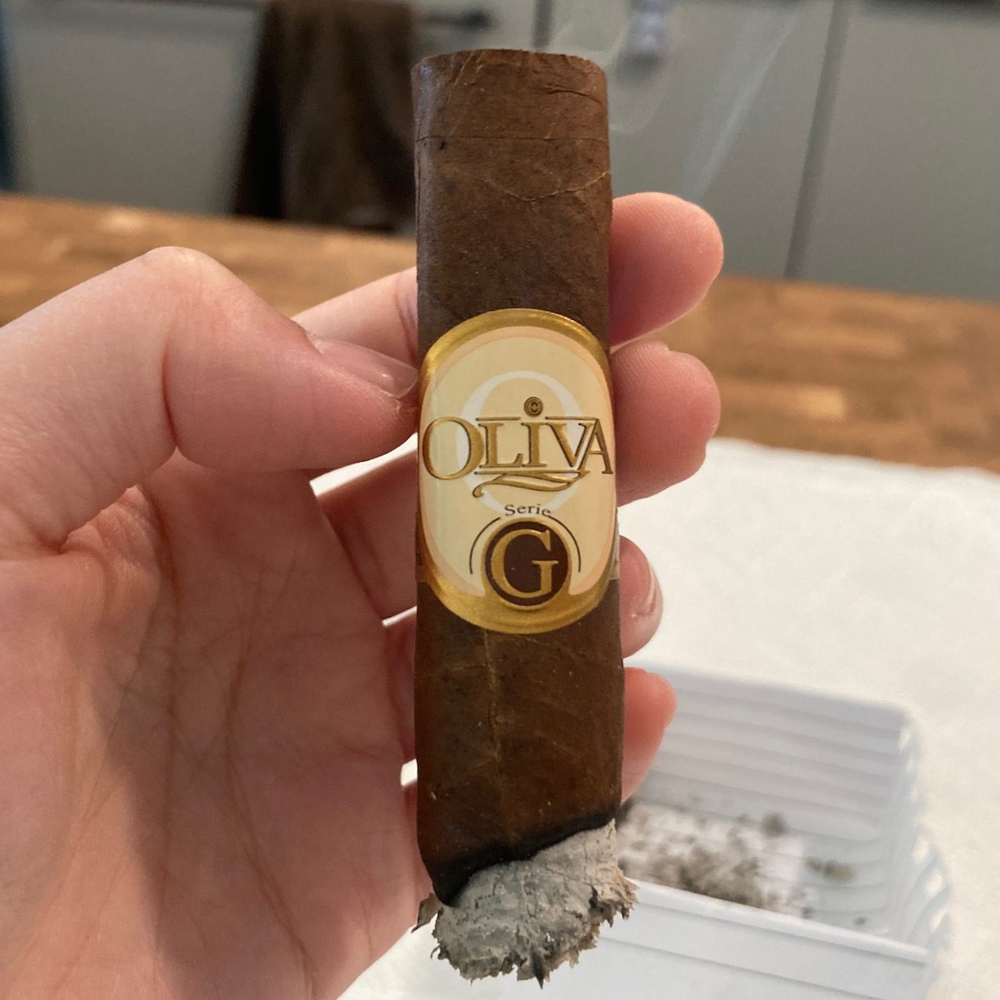
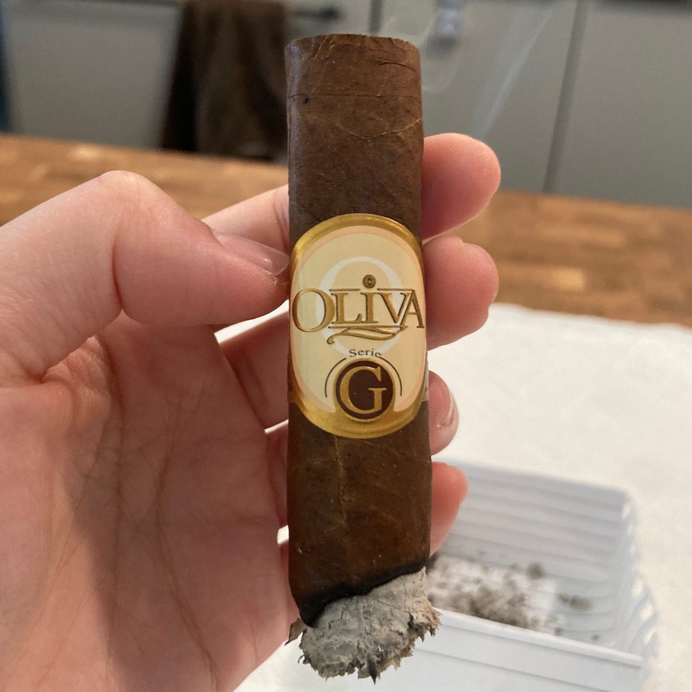

Cigar Review: Oliva G Robusto (2)
Since I was having such a wonderful time with Oliva G last
time. I thought
it's a chill and light cigar so I picked up two more. However, this

The cigar started out good as last time. The flavour that I got was smooth almond type of nuttiness. It was woody, but not sweetness or coffee taste. Midway through, I tasted toasted nuttiness with a bit of spice and a strange sour taste. That sour taste did not exist in all puffs though.
I did notice that the smoke output for this one has a bigger amount than my previous Oliva G. The burn kept growing crooked for some reason and the experience was just not as relaxing as my first Oliva G. I have to constantly fix it, but it would grow crooked again. The ash looks beautifully white and did not have as many little white ball as last time.
 

The smoke time for this one was a little bit over an hour. It was about 15-20 min longer than my first Oliva G. It's a fairly long smoke consider this is not a big cigar. I actually got nicotine sickness from this one. This cigar was more smoky than the previous one and I did not properly vent the smoke out. The whole room was covered in smoke.
I had to end it earlier than I originally planned to because I started to feel dizzy, got a bad headache, and felt a bit nauseous. I could barely stand. My first thought was to put out the smoke and air out the room.
Then I realized that I might actually be dehydrated. I swallowed down two glasses of water then sat down to wait for the dizziness to go away. After feeling slightly better, I took a shower to be in a more humid environment and wash all the smoke away. Thank goodness that the headache was gone within an hour and I was able to do proper clean up afterwards.
The lesson here for me: it does matter how small the cigar is, smoking indoor even with the vent on is never a good idea. Avoid at all cost!!
I hope you won't make the same mistake as I did. Enjoy your cigar in the beautiful nature. Stay safe and have a wonderful day! 💪 🏖